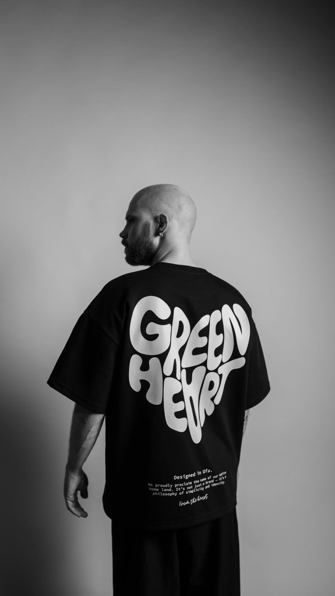
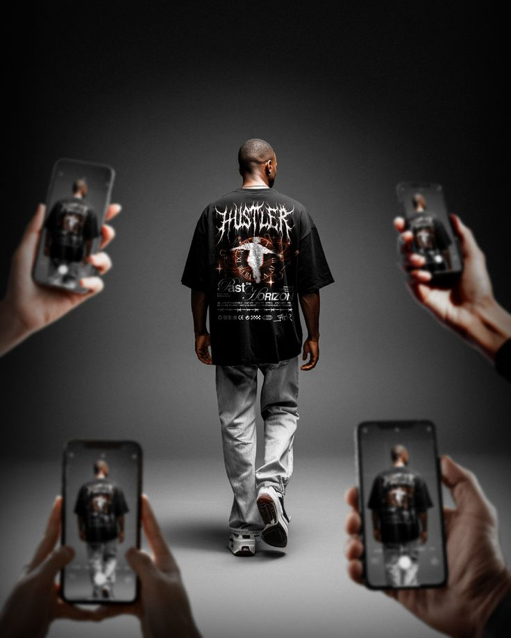
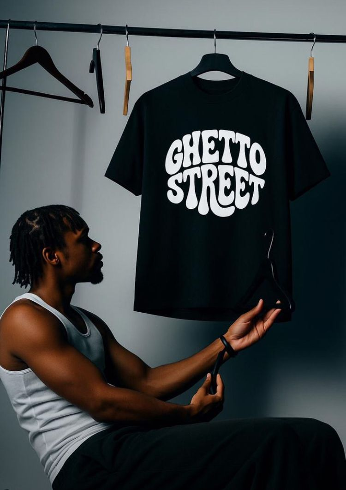

Identidad
No diseñamos para encajar. Diseñamos para representar. Cada prenda es una extensión de actitud, no de moda.
Una visión que nace en la calle
URBN 2026 no nace de una tendencia. Nace del entorno. De la calle, del movimiento constante, del ruido visual de la ciudad.
Cada colección es una interpretación del presente urbano: lo que vestimos, lo que vivimos y lo que ignoramos todos los días.
No diseñamos para encajar. Diseñamos para representar. Cada prenda es una extensión de actitud, no de moda.

Siluetas amplias, estructuras limpias y proporciones pensadas para el movimiento. Menos ruido, más presencia.

Vestir URBN no es seguir una estética. Es una decisión. Una forma de estar en la ciudad sin pedir permiso.

Una colección pensada para quienes entienden que el estilo no se busca. Se construye en movimiento.